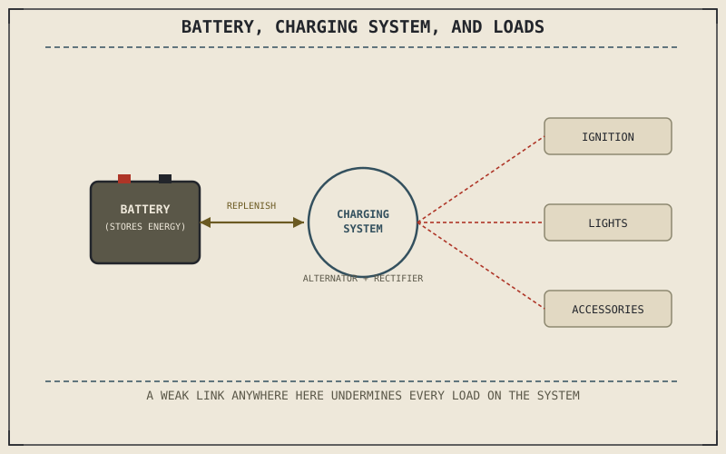

Every maintenance item this part has covered so far — oil, chain, tyres, brakes — is mechanical, wearing or degrading through physical contact and motion. The electrical system runs on a different set of principles entirely, and Chapter 2.4's ignition timing discussion has already quietly depended on this system without naming it directly: that spark firing at precisely the right crank angle needs reliable electrical energy to actually happen, every single time, at every RPM.
Chapter 10.6 closed by naming battery and electrical system care as this chapter's subject, the next maintenance area running on different underlying principles. This chapter covers it.
The Battery: Storage, Not Generation
A motorcycle's battery doesn't generate electrical energy — it stores it chemically and releases it on demand, supplying the burst of current needed to start the engine and buffering the electrical system against sudden load changes once running. That stored chemical energy self-discharges gradually even when the motorcycle sits unused, and a battery left fully discharged for an extended period can develop sulfation, a crystalline buildup on the internal plates that permanently reduces the battery's capacity to hold charge — this is a genuinely different failure mode from the wear-through-use this part's other maintenance items have described, since it happens specifically through disuse rather than through operation.
The Charging System: Replenishing What Starting and Running Draw
While the engine runs, a charging system — an alternator or stator driven by the engine, paired with a rectifier and voltage regulator — converts a portion of the engine's own mechanical output into electrical energy, replenishing the battery and directly powering the ignition system Chapter 2.4 described, the lights Chapter 9.9 and Chapter 9.12 identified as essential for visibility, and any other electrical accessory running at the time. A charging system producing too little voltage leaves the battery gradually depleting even while the engine runs, masking the problem until the battery's reserve is finally exhausted, often at a genuinely inconvenient moment; one producing too much voltage can actually overcharge and damage the battery it's meant to protect.
A battery doesn't generate anything — it stores energy the charging system replenishes while the engine runs, and it can fail in two entirely different ways: gradual sulfation from sitting unused, or a charging system quietly failing to keep pace with what starting and running actually draw.

A diagram showing the battery storing chemical energy, the charging system replenishing it while the engine runs, and electrical loads — ignition, lights, accessories — drawing from that same shared electrical system.
Terminal Corrosion: A Small Problem With System-Wide Effects
Corrosion at the battery terminals adds electrical resistance at exactly the connection point every other electrical component depends on, which can produce symptoms that look like a weak battery or a failing charging system even when both are actually healthy — a genuinely common maintenance misdiagnosis. Keeping terminals clean and connections tight is a small, low-effort check that rules out this specific failure mode before assuming a more expensive component has actually failed.
A Common Misconception, Cleared Up Early
It's easy to assume a motorcycle that starts reliably has a healthy electrical system by definition, since starting is the most obvious electrical demand a rider notices. A charging system producing slightly too little voltage can still start the engine reliably for a long time, slowly depleting the battery's reserve capacity in the background, right up until a longer ride, colder weather, or an additional electrical accessory finally exposes the shortfall. Starting reliability alone doesn't verify the charging system is actually keeping pace with demand.
Where This Leads
The electrical system runs on different principles from the mechanical items this part has covered so far. The air filter and cooling system return to more familiar mechanical territory, managing what enters and how heat leaves the engine. Chapter 10.8 turns to that next.
Key Concepts to Remember
- A battery stores electrical energy chemically rather than generating it, and can fail through sulfation from extended disuse, distinct from wear-through-operation.
- The charging system replenishes the battery and powers ignition, lights, and accessories while running, and can fail by supplying too little or too much voltage.
- Corroded terminals add resistance that can mimic battery or charging system failure, making a simple terminal check a useful first diagnostic step.
Cross-References
| ← Ch. 2.4 | Established precise ignition timing as essential to combustion; this chapter identifies the electrical system that reliably delivers the spark that timing depends on. |
| ← Ch. 9.12 | Established headlight range as directly limiting safe night riding speed; this chapter shows the charging system as what keeps that headlight reliably powered. |
| → Ch. 10.8 | Covers air filter and cooling system maintenance, returning to mechanical maintenance territory. |